Soru 1Cevap: E
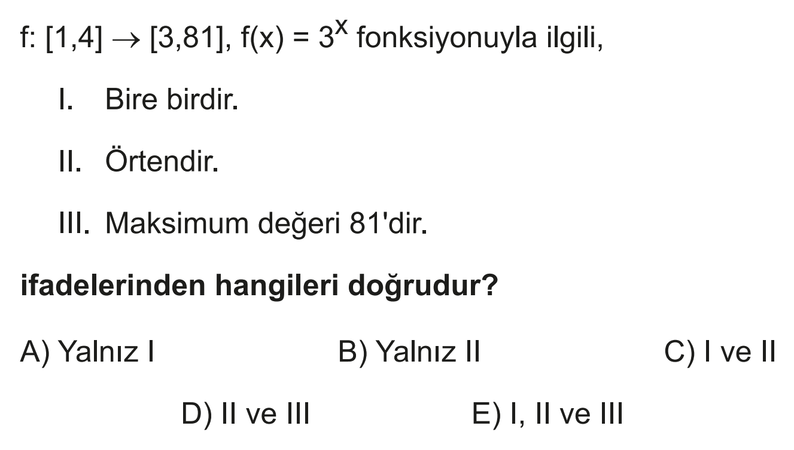
Çözüm
- $3^x$ artan: $[1,4]$'te bire bir (I).
- $f(1)=3$, $f(4)=81$: görüntü $[3,81]$ = değer kümesi, örten (II).
- Maksimum $81$ (III). I, II ve III (E).
Cevap: E
Soru 2Cevap: C
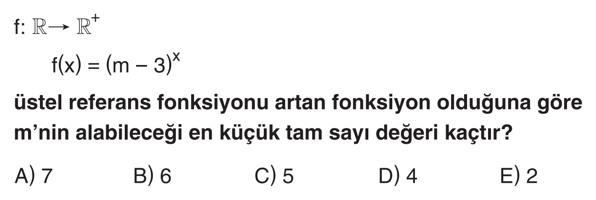
Çözüm
- Artan üstel fonksiyon: taban $m-3\gt1$.
- $m\gt4$.
- En küçük tam sayı $5$ (C).
Cevap: C
Soru 3Cevap: E
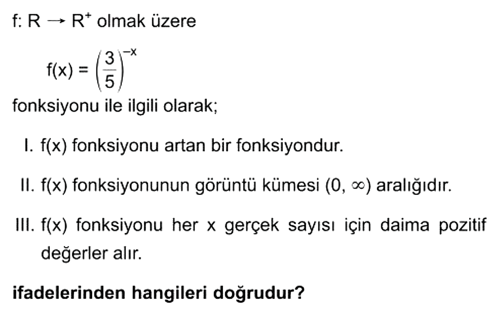
A)Yalnız IB)I ve IIC)I ve IIID)II ve IIIE)I, II ve III
Çözüm
- $\left(\tfrac35\right)^{-x}=\left(\tfrac53\right)^x$: taban $\gt1$, artan (I).
- Görüntü kümesi $(0,\infty)$ (II).
- Her $x$ için pozitif (III). I, II ve III (E).
Cevap: E
Soru 4Cevap: A
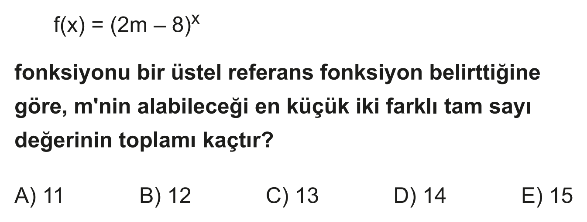
Çözüm
- $2m-8\gt0\Rightarrow m\gt4$; $2m-8\ne1\Rightarrow m\ne\tfrac92$.
- En küçük tam sayılar $5$ ve $6$.
- Toplam $11$ (A).
Cevap: A
Soru 5Cevap: C
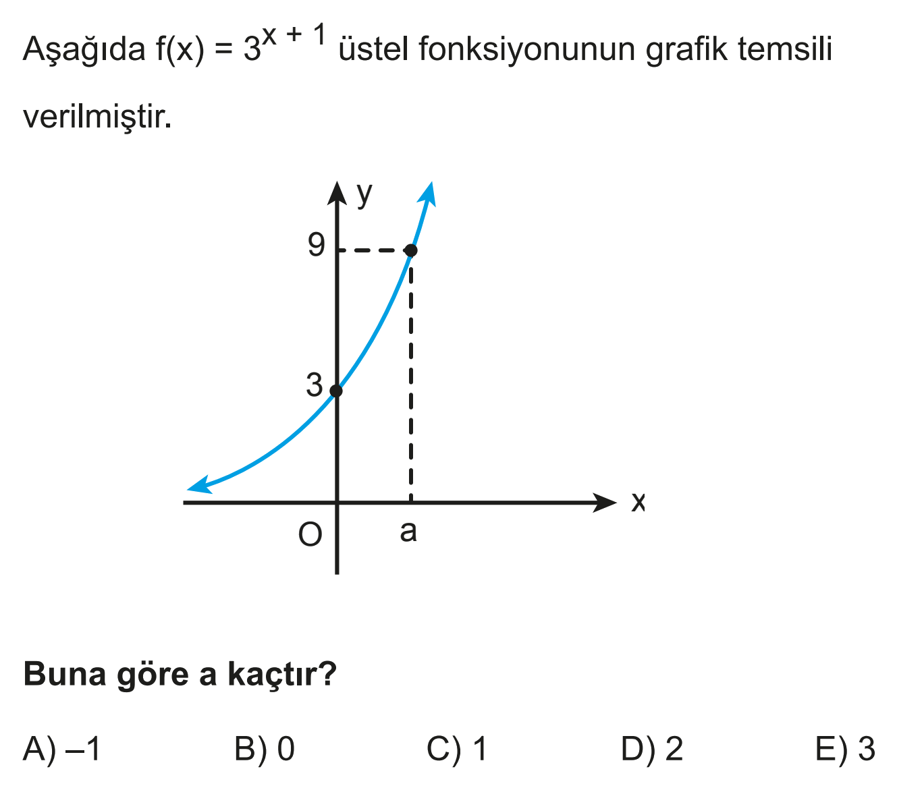
Çözüm
- $f(0)=3^1=3$ grafikle uyumlu.
- $f(a)=9\Rightarrow3^{a+1}=3^2$.
- $a+1=2\Rightarrow a=1$ (C).
Cevap: C
Soru 6Cevap: E
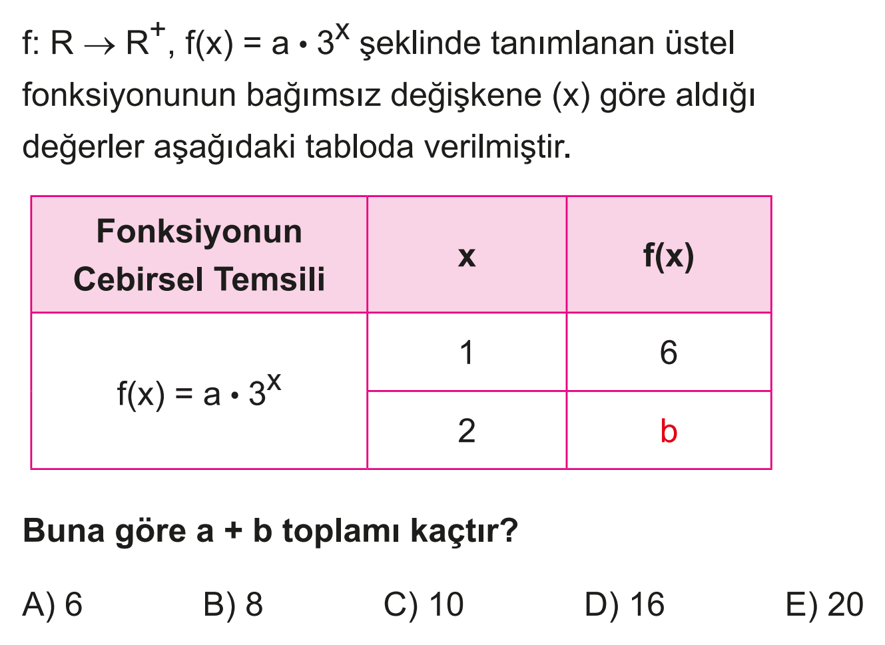
Çözüm
- $f(1)=3a=6\Rightarrow a=2$.
- $b=f(2)=2\cdot9=18$.
- $a+b=20$ (E).
Cevap: E
Soru 7Cevap: D
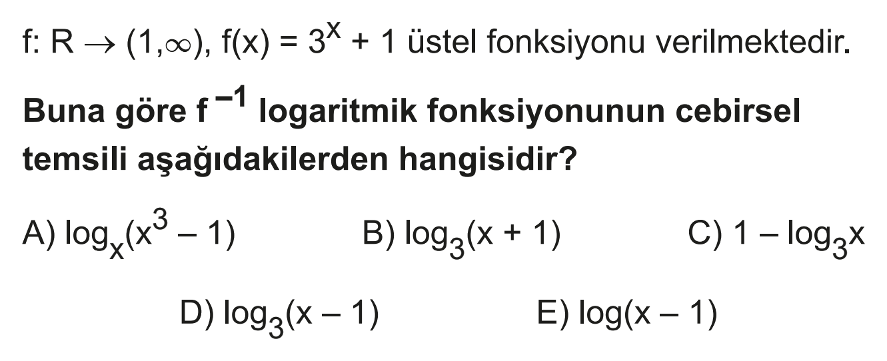
Çözüm
- $y=3^x+1\Rightarrow3^x=y-1$.
- $x=\log_3(y-1)$.
- $f^{-1}(x)=\log_3(x-1)$ (D).
Cevap: D
Soru 8Cevap: A
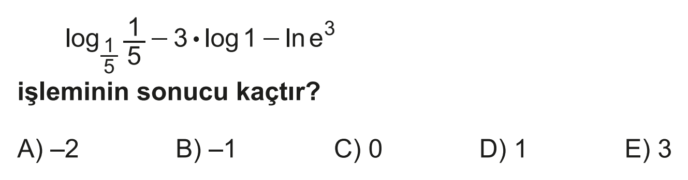
Çözüm
- $\log_{1/5}\tfrac15=1$.
- $\log1=0$, $\ln e^3=3$.
- $1-0-3=-2$ (A).
Cevap: A
Soru 9Cevap: B
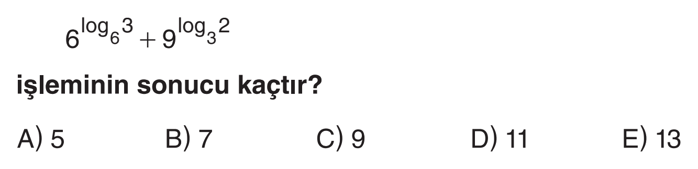
Çözüm
- $6^{\log_63}=3$.
- $9^{\log_32}=(3^{\log_32})^2=4$.
- Toplam $7$ (B).
Cevap: B
Soru 10Cevap: B
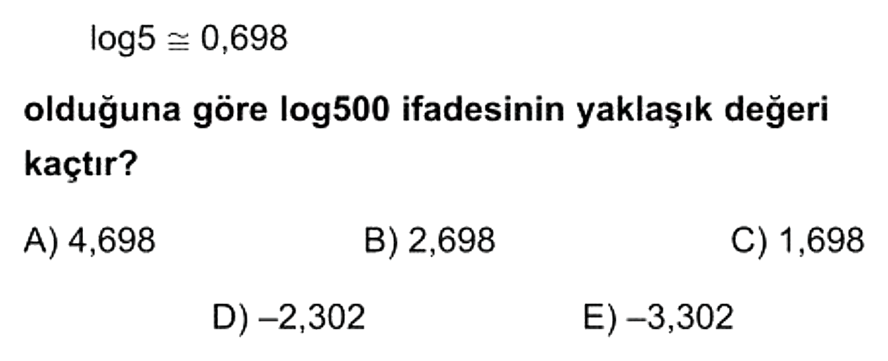
Çözüm
- $500=5\cdot100$.
- $\log500=\log5+2$.
- $\approx2{,}698$ (B).
Cevap: B
Soru 11Cevap: E
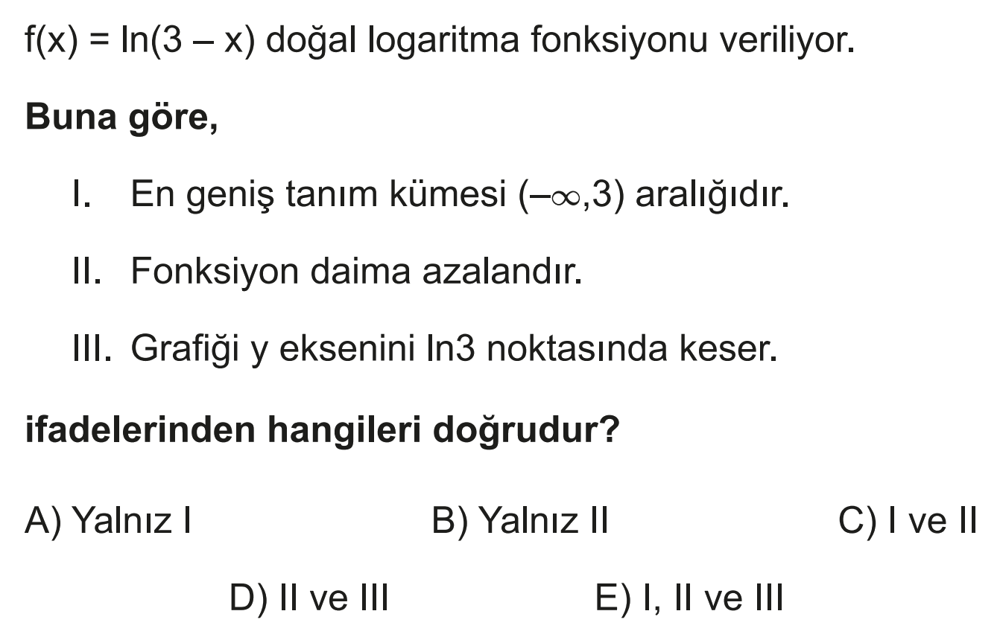
Çözüm
- $3-x\gt0\Rightarrow x\lt3$: tanım kümesi $(-\infty,3)$ (I).
- $x$ artınca $3-x$ azalır, $\ln$ artan: $f$ azalan (II).
- $f(0)=\ln3$ (III). I, II ve III (E).
Cevap: E
Soru 12Cevap: C
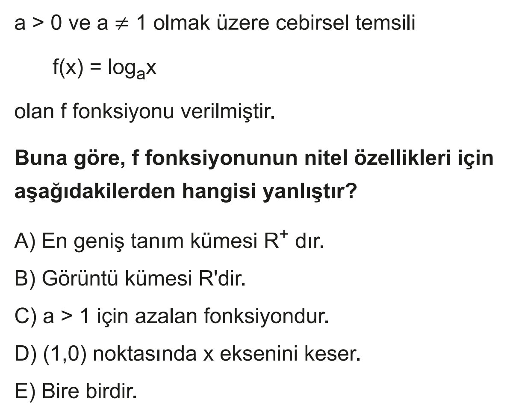
Çözüm
- $\log_ax$: tanım $\mathbb R^+$, görüntü $\mathbb R$, $(1,0)$'dan geçer, bire bir.
- $a\gt1$ iken fonksiyon artandır.
- "$a\gt1$ için azalan" yanlıştır (C).
Cevap: C
Soru 13Cevap: E
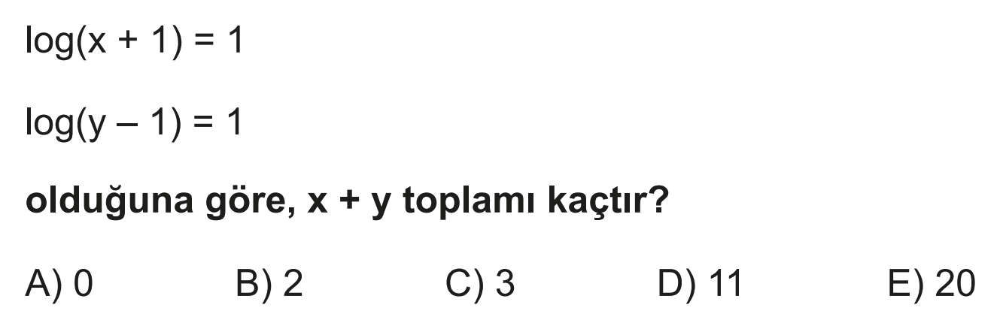
Çözüm
- $x+1=10\Rightarrow x=9$.
- $y-1=10\Rightarrow y=11$.
- $x+y=20$ (E).
Cevap: E
Soru 14Cevap: B
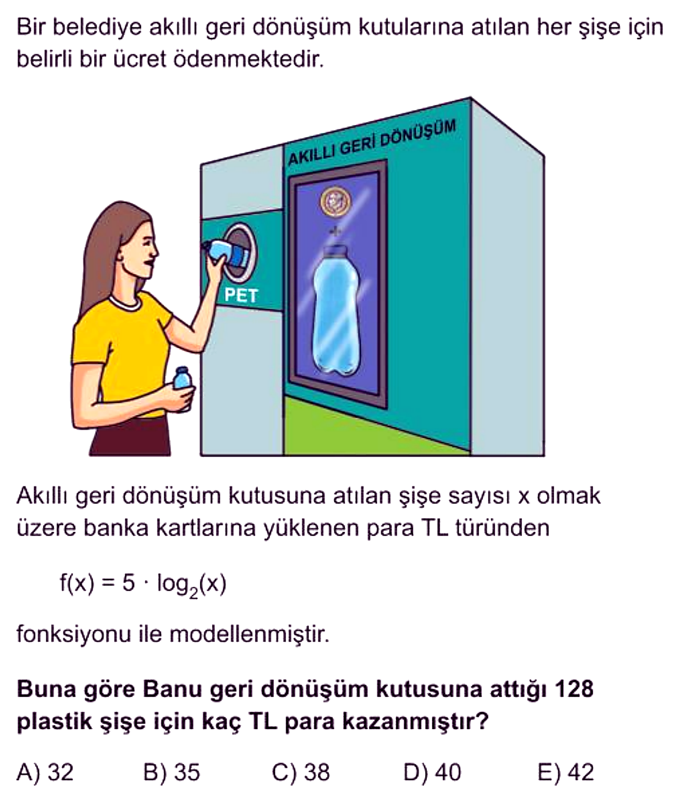
Çözüm
- $f(128)=5\log_2128$.
- $\log_2128=7$.
- $35$ TL (B).
Cevap: B
Soru 15Cevap: C
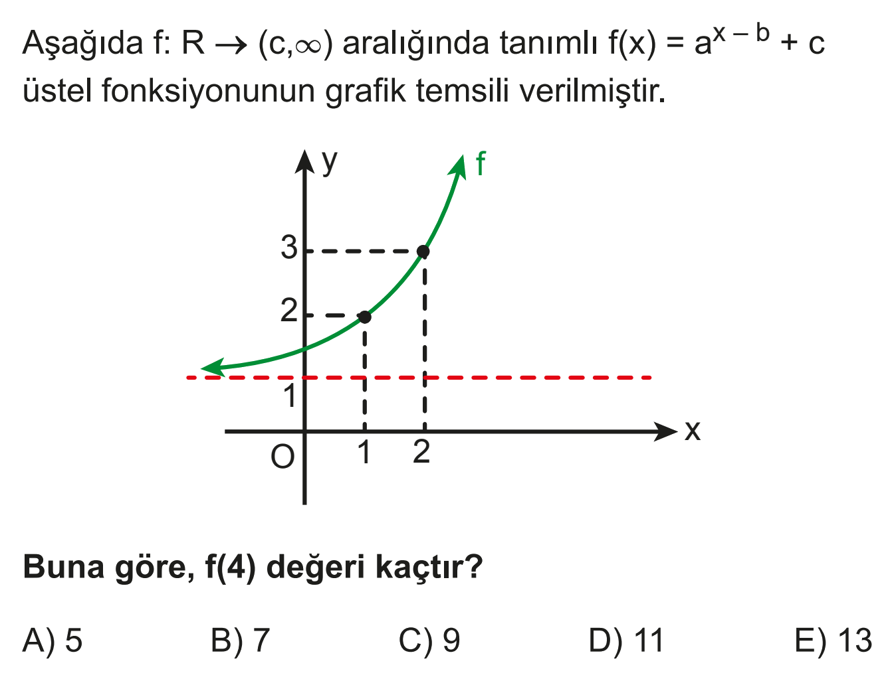
Çözüm
- Yatay asimptot $y=1$: $c=1$.
- $f(1)=a^{1-b}+1=2\Rightarrow a^{1-b}=1\Rightarrow b=1$; $f(2)=a+1=3\Rightarrow a=2$.
- $f(4)=2^3+1=9$ (C).
Cevap: C
Soru 16Cevap: C
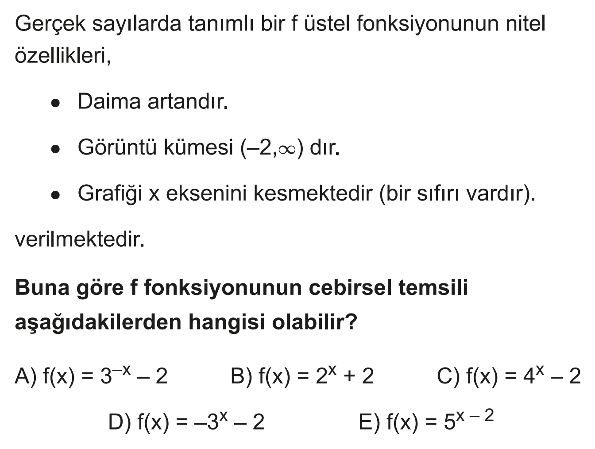
Çözüm
- Görüntü $(-2,\infty)$: $a^x-2$ biçimi ($a\gt0$ katsayılı); B ve D elenir.
- Daima artan: taban $1$'den büyük; A elenir. E'nin görüntüsü $(0,\infty)$.
- $4^x-2$: artan, görüntü $(-2,\infty)$, $x=\tfrac12$'de sıfır (C).
Cevap: C
Soru 17Cevap: A
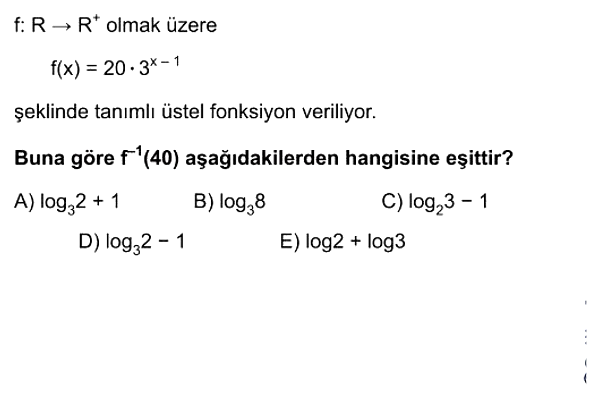
Çözüm
- $f^{-1}(40)=t\iff20\cdot3^{t-1}=40$.
- $3^{t-1}=2\Rightarrow t-1=\log_32$.
- $t=\log_32+1$ (A).
Cevap: A
Soru 18Cevap: A
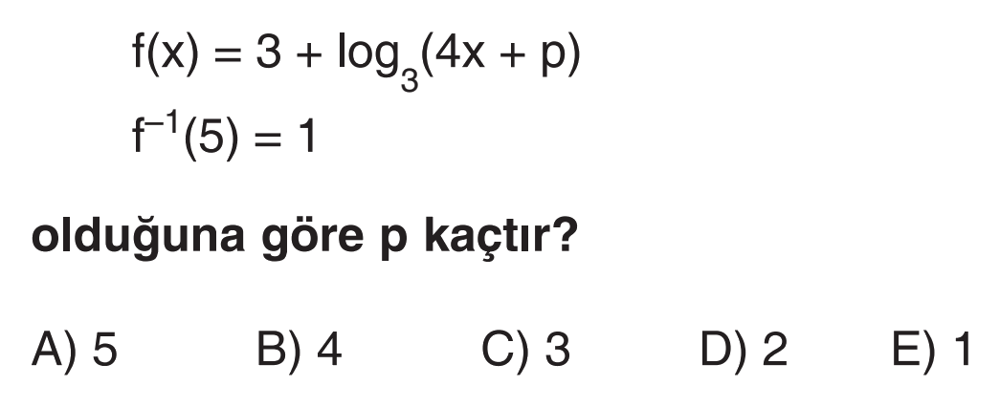
Çözüm
- $f^{-1}(5)=1\iff f(1)=5$.
- $3+\log_3(4+p)=5\Rightarrow\log_3(4+p)=2$.
- $4+p=9\Rightarrow p=5$ (A).
Cevap: A
Soru 19Cevap: D
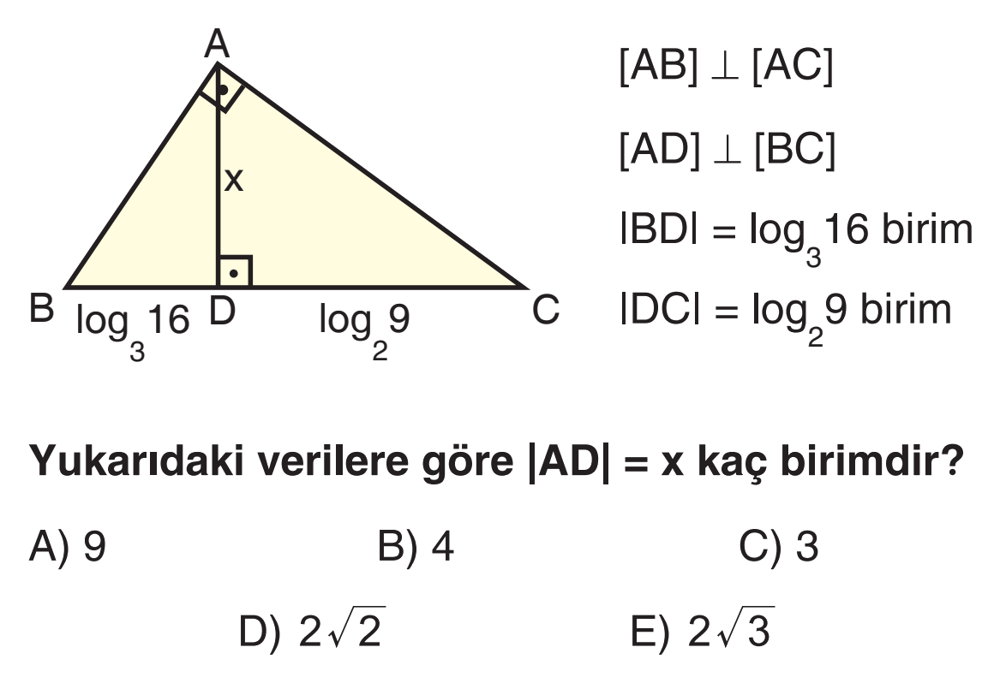
Çözüm
- Dik üçgende yükseklik bağıntısı: $|AD|^2=|BD|\cdot|DC|$.
- $\log_316\cdot\log_29=4\log_32\cdot2\log_23=8$.
- $x=\sqrt8=2\sqrt2$ (D).
Cevap: D
Soru 20Cevap: D
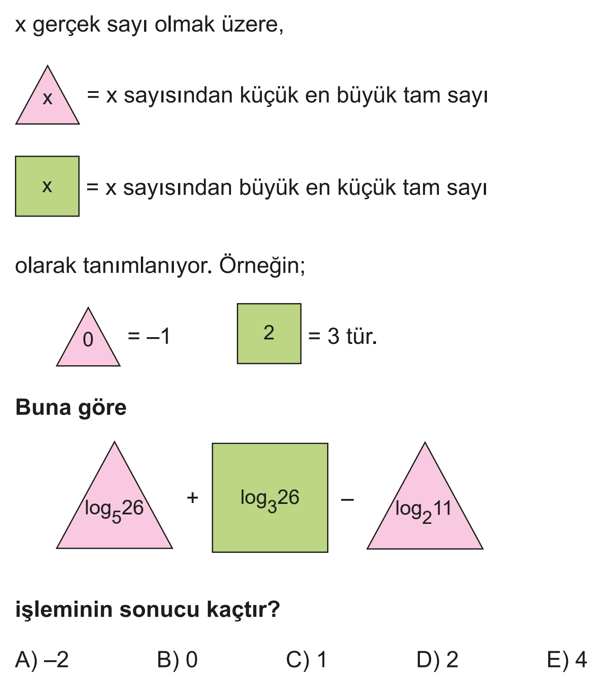
Çözüm
- $25\lt26\lt125\Rightarrow2\lt\log_526\lt3$: üçgen $2$.
- $9\lt26\lt27\Rightarrow2\lt\log_326\lt3$: kare $3$; $8\lt11\lt16\Rightarrow3\lt\log_211\lt4$: üçgen $3$.
- $2+3-3=2$ (D).
Cevap: D
Soru 21Cevap: B
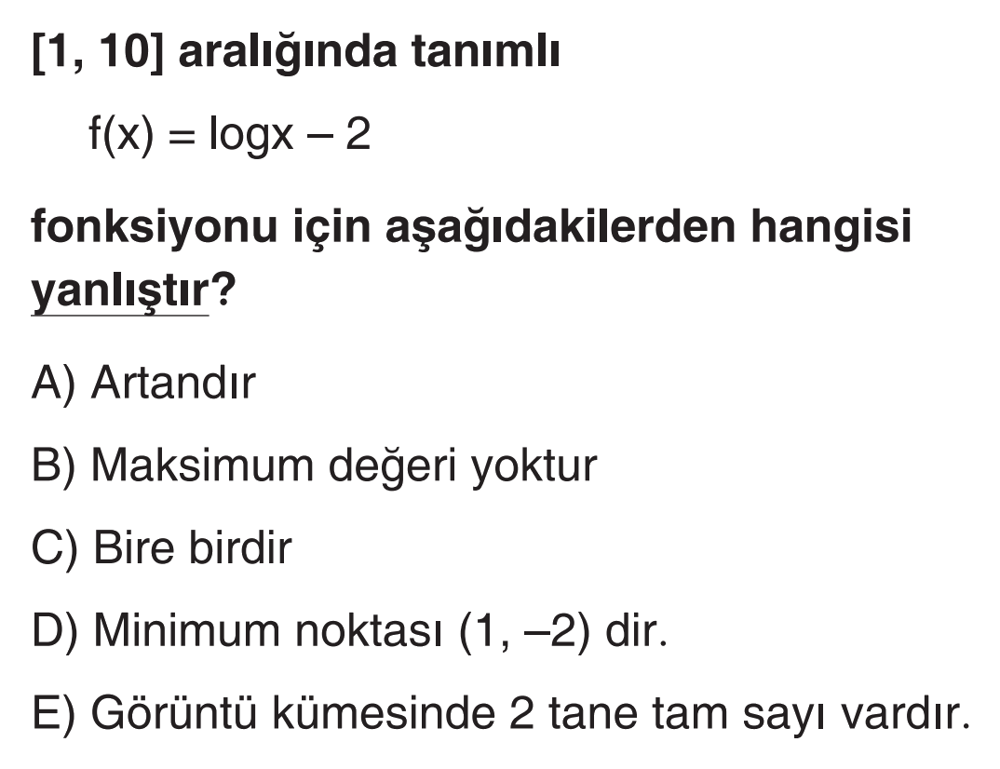
Çözüm
- $\log x-2$, $[1,10]$'da artan ve bire bir (A, C doğru).
- $f(1)=-2$ minimum, $f(10)=-1$ maksimum: maksimum değer vardır (B yanlış), minimum noktası $(1,-2)$ (D doğru).
- Görüntü $[-2,-1]$: $-2$ ve $-1$ iki tam sayı (E doğru). Yanlış olan B.
Cevap: B
Soru 22Cevap: C
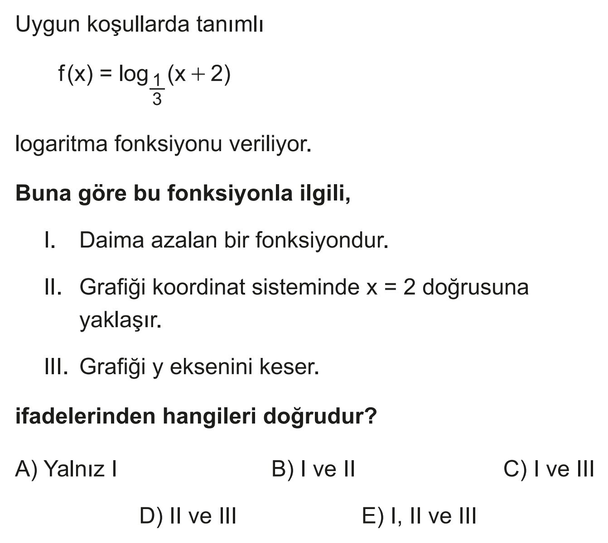
Çözüm
- Taban $\tfrac13\lt1$: daima azalan (I doğru).
- Dikey asimptot $x+2=0\Rightarrow x=-2$, $x=2$ değil (II yanlış).
- $f(0)=\log_{1/3}2$ tanımlı: $y$ eksenini keser (III doğru). I ve III (C).
Cevap: C
Soru 23Cevap: E
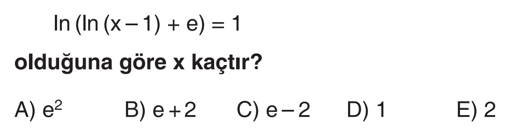
Çözüm
- $\ln(\ln(x-1)+e)=1\Rightarrow\ln(x-1)+e=e$.
- $\ln(x-1)=0\Rightarrow x-1=1$.
- $x=2$ (E).
Cevap: E
Soru 24Cevap: B
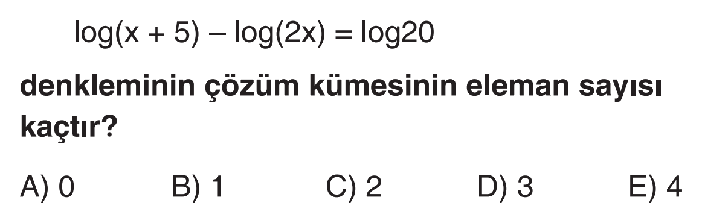
Çözüm
- $\log\dfrac{x+5}{2x}=\log20\Rightarrow x+5=40x$.
- $x=\tfrac5{39}$.
- $x\gt0$ olduğundan geçerli: $1$ eleman (B).
Cevap: B
Soru 25Cevap: A
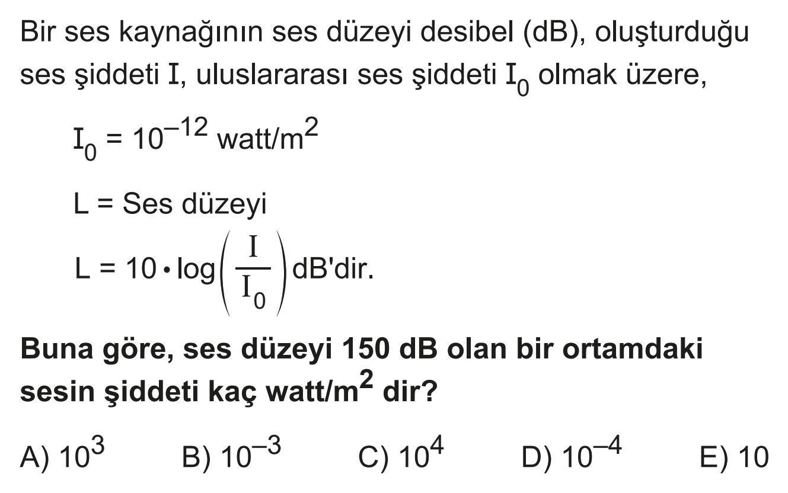
Çözüm
- $150=10\log\dfrac I{10^{-12}}\Rightarrow\dfrac I{10^{-12}}=10^{15}$.
- $I=10^{15}\cdot10^{-12}$.
- $I=10^3$ W/m² (A).
Cevap: A
Soru 26Cevap: D
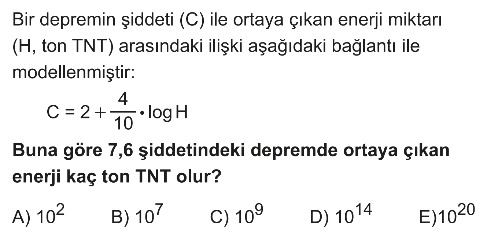
Çözüm
- $7{,}6=2+\tfrac4{10}\log H$.
- $\log H=\dfrac{5{,}6}{0{,}4}=14$.
- $H=10^{14}$ ton (D).
Cevap: D
Soru 27Cevap: A
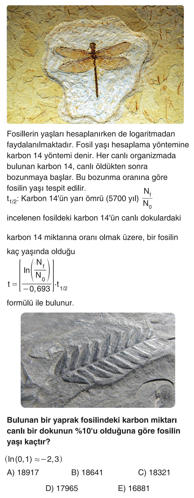
Çözüm
- $\dfrac{N_t}{N_0}=0{,}1\Rightarrow\ln0{,}1\approx-2{,}3$.
- $t=\dfrac{-2{,}3}{-0{,}693}\cdot5700\approx3{,}319\cdot5700$.
- $t\approx18917$ yıl (A).
Cevap: A
Soru 28Cevap: C
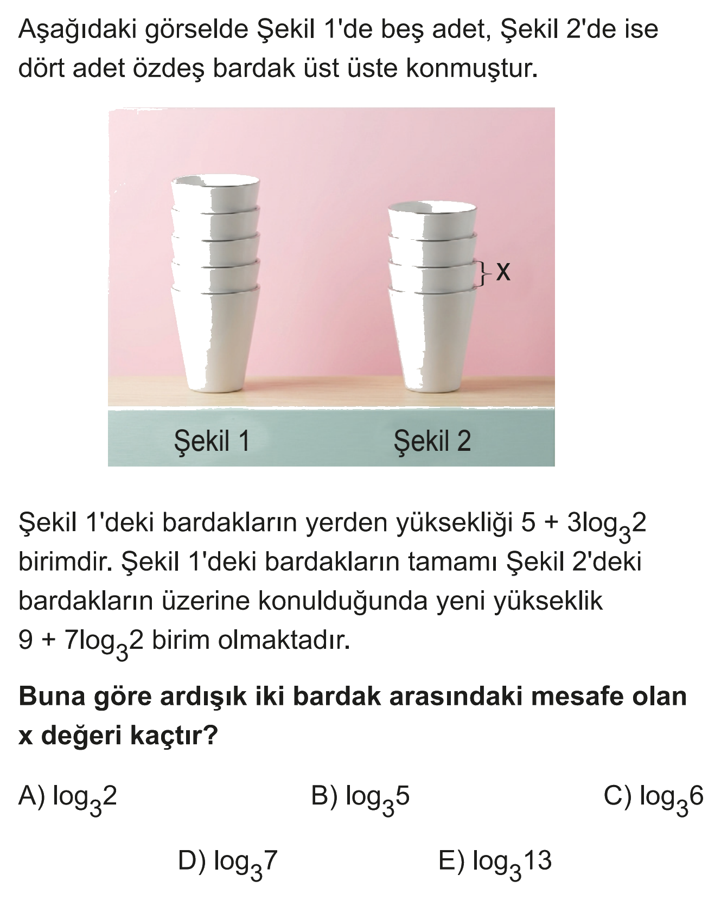
Çözüm
- $5$ bardağın üzerine $4$ bardak eklenmiş gibi: $9$ bardak $=5$ bardak $+4x$.
- $4x=(9+7\log_32)-(5+3\log_32)=4+4\log_32$.
- $x=1+\log_32=\log_36$ (C).
Cevap: C
Soru 29Cevap: D
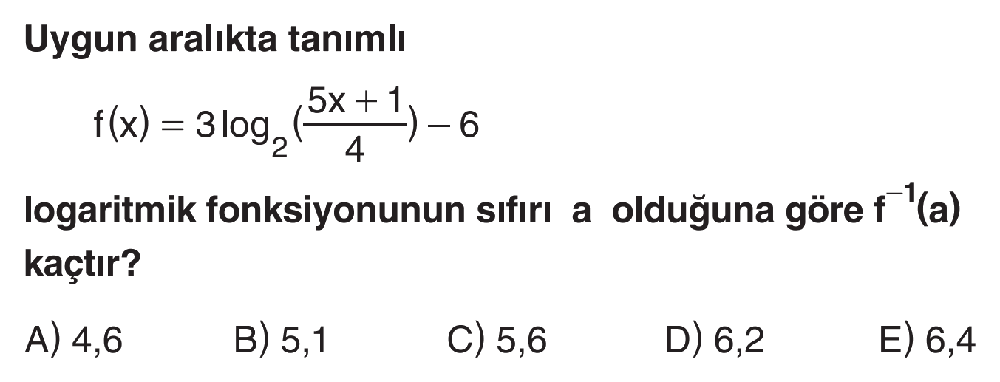
Çözüm
- $f(x)=0\Rightarrow\log_2\dfrac{5x+1}4=2\Rightarrow5x+1=16\Rightarrow a=3$.
- $f^{-1}(3)=t\iff3\log_2\dfrac{5t+1}4-6=3\Rightarrow\dfrac{5t+1}4=8$.
- $5t+1=32\Rightarrow t=6{,}2$ (D).
Cevap: D
Soru 30Cevap: D
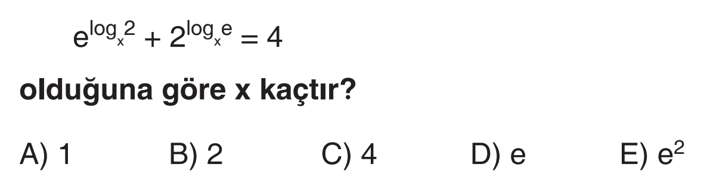
Çözüm
- $2^{\log_xe}=e^{\ln2\cdot\log_xe}=e^{\frac{\ln2}{\ln x}}=e^{\log_x2}$.
- $2e^{\log_x2}=4\Rightarrow\log_x2=\ln2$.
- $\dfrac{\ln2}{\ln x}=\ln2\Rightarrow\ln x=1\Rightarrow x=e$ (D).
Cevap: D